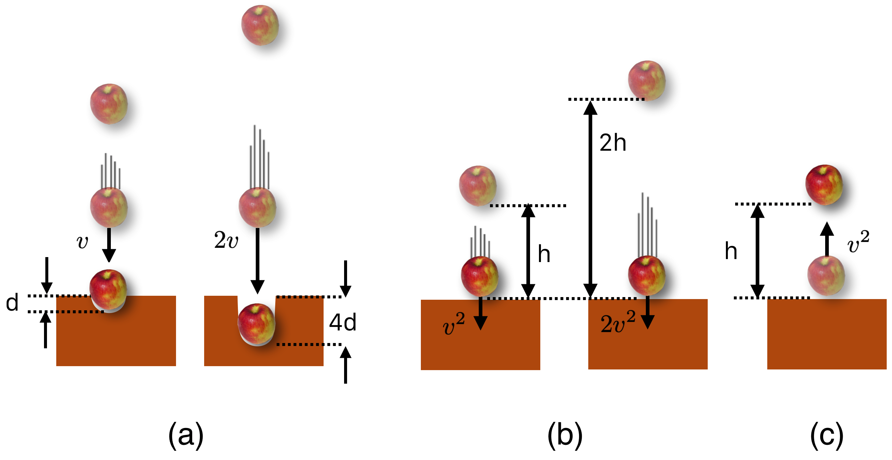

8.1. Ability to Do Damage: Kinetic Energy#
Okay. “Ability to Do Damage” isn’t a scientific phrase…but I’ll bet you’ll remember it better than our very specific use of a very regular word: “work.” If you want to do damage to something, you initiate some sort of contact with it and speed often figures into that process. Want to demolish something with a hammer? Gently pat it? or swing the hammer at high speed? Want to smash a teapot by dropping a rock onto it? Drop it from high up so it’s moving really fast when it hits. So if you want some damage, you need some speed.
But mass figures in too: a hammer made out of balloons is not a damage-maker and neither is a pebble. So a question is: what’s more important, mass or speed in inflicting damage? This subject is tightly coupled to our favorite collision-topic of momentum.
Let’s go back to high school.
Wait. No! No no no no! Calm down. It’s just a cheap story device.
Imagine that Principal Crotchety took away the catchers mitts from the boys baseball and girls softball teams, so each catcher must catch a pitched ball with his or her bare hands.
A regulation softball has a mass of about 0.22 kg while a regulation baseball has a mass of just about half of that, 0.145 kg. Here’s the question: An average high school softball pitch is about 50 mph – 10 or 15 mph faster than that, and you’ve got a college pitcher on your hands. But a 50 mph baseball is not so impressive: that’s less than batting practice speeds. Consider these two trade-offs, and think about having to bare-hand catch the following:
Replace a baseball thrown of 50 mph with a softball of the same speed – a factor of 2 increase in mass, but same speed?
Replace a baseball thrown at 50 mph with a baseball thrown at 100 mph – a factor of 2 increase in speed but the same mass?
Which pitch would do proportionally more “damage”—hurt more? I’d take the first example any day.
Our catcher, Herman, is warming up his disappointing, 50 mph pitcher barehanded. After each pitch the baseball would compress and bend his skin, the underlying facia, muscle, and fluids until the ball comes to rest. That compression hurts and blood rushes to start the tissue repair and he’ll bruise (that’s the…damage). Across the field, Blanche is barehand-catching her terrific pitcher who’s throwing 50 mph softballs. She’s putting up with more damage to her hands. But while damage was done to both, did either one fall down? Probably not. This comes to the interplay between momentum and “damage” which will become clearer in a bit.
To the best of my knowledge, Galileo wasn’t a baseball fan, but he did think about pile-drivers—those devices that transport a large mass into the air and then release it directly over a beam (the pile) that needs to be driven into the ground. He found two interesting things:
First, the higher you go to release the weight, the deeper the beam is driven into the ground. But not linearly. Galileo speculated about this (by listening to the sounds of pile drivers). It was measured a century after him in 1720 by Dutch natural scientist Willem Gravesande at Leiden University who dropped balls of different masses on clay. He found that if one drops a mass that it dents the clay landing-spot. No surprise there. If one then doubled the speed just before the impact the result is a dent which was four times deeper than the original. That’s suggested in the figure below.
Galileo also found that the speed of an object in free-fall increases slower than linearly…if you drop an object from 10 feet and measure the speed at the bottom and compare that to the speed from a drop twice as high you’ll find that the speed increases by a factor of \(\sqrt{2}\), about 1.4. (Look at Equation @ref(eq:vax))
Finally, Galileo speculated that if you launched an object vertically with an initial speed that’s equal to the speed at the ground when it fell from 10 feet, it would rise back to 10 feet. This is also suggested in the figure below.
{kind=link}

Fig. 8.1 The above list in figures. (a) shows that the higher the fall, the deeper the indentation by the square of the distance. (b) shows that the higher the drop, the faster an object goes by the square of the velocity. And, (c) shows that a ball will return to the original height if shot from below at the speed it would have fallen.#
Catching a baseball is an \(A+B \to C\) type of collision. From your experience, you know that if someone throws you a ball and you catch it, that you’re probably not going to be carried backwards at a high speed.
Example!
Have a look at the first deeper explanation: Herman’s a light weight catcher and if he catches that 50 mph ball, what is his (and the ball’s) speed after he catches it?
The light baseball slowed from 22 m/s (50 mph) to 0.06 m/s (0.13 mph) when caught by the massive, but slight, Herman.
Wait. This surprises me. Where did all that speed go? Glad you asked. In this (perfectly constructed) example, there’s only an imperceptible speed after that fast ball hits its target (Herman). Stay with me, and we’ll find where the speed went!
8.1.1. Kinetic Energy In Practice#
If there’s so little speed transfer, why would that 100 mph baseball hurt so much more than a 50 mph baseball? The hint is in the results from that 1720 clay experiment. You see: when a moving object does damage to a another object, speed matters more than mass, in fact it matters by a lot more.
Since mass and velocity contribute to momentum in equal proportions, “damage” refers to some other quality of motion, different from momentum. We call it Kinetic Energy. We’ll use the symbol \(K\) to stand for it and in modern terms, its ability to do damage is related to the square of speed and only one power of mass. Our modern notion (since the late 1800’s) came slowly.
Kinetic Energy, \(K\), is the energy that an object has because it’s moving.
One of the remarkable achievements of Huygens, anticipating Newton’s concept of mass, was the discovery of a second conserved quantity. In this, Huygens had an eventual partner: Gottfried Leibnitz — Newton’s bitter rival for the priority of the Calculus — who independently had the same idea. They both found by calculation and experiment that if you add up all of the quantities: \(mv^2\) for all of the objects in a special kind of collision that the total amount of that quantity before is equal to the total amount afterwards…without regard to direction. That is, since the velocity is squared this is not a vector quantity, but a scalar one. Just numbers.
Leibnitz inconveniently called this quantity \(mv^2\) a “force,” in particular the “life force” or “vis viva.” It’s not a force! That’s what happens when you’re inventing a whole field of thought.
Today (actually, about mid-18th century), a factor of \(\dfrac{1}{2}\) is added in order to create the quantity we call:
**It was Huygens. **
Here’s a story of hurt feelings and over-the-top gentlemanly behavior. Unsatisfied with Descartes’ approach to what we now call momentum, Huygens worked out both momentum conservation and kinetic energy conservation some time around 1656, wrote it up, and didn’t publish it. But. In a trip to London he told colleagues of his ideas.
Imagine his surprise when Christopher Wren and John Wallace each submitted papers to the Royal Society (RS) using his ideas—Wren solving the “elastic collision” problem and Wallace solving the “inelastic problem” (Herman’s baseball problem). He learned about it because the head of the RS sent the papers to Huygens for comment!
Although he must have been hurt, Huygens replied by submitting his unpublished solutions—in Latin—as his review of their papers. Undeterred, the RS ignored Huygens’ manuscript and published Wren’s and Wallace’s work without mentioning him. Huygens then reduced his solutions to two pages—in French—and submitted that to the Royal Society’s French publishing competitor.
That got the attention of the RS which quickly translated Huygens’ two pager into Latin and published it in the RS journal with a nearly two page Royal Society Apology. Of course, Huygens then expressed his heartfelt appreciation for his foreigner RS membership. Everyone was nice.
Christiaan Huygens was The Man. Only eclipsed by Isaac Newton, The Other Man.
8.1.2. Classification of Collisions#
One of the aspects of this that’s confusing is that Huygens’ conservation only happens in particular kinds of collisions, which I hinted at in the last lesson. If two colliding objects have no parts — if they’re elementary and fundamental — then, and only then, is \(K\) conserved. This means that
if the collision is for objects with no parts. Elementary particles. Prefect ones. Collisions of that type are called elastic. In everyday life, that’s an abstraction. For elementary particles, that’s the way it actually is.
Nothing about our everyday world is that way. Everything’s got parts! But it is possible to create materials such that when they collide they first, bounce off of one another (not Herman’s caught baseball, but more like billiard balls) and second, when they collide they compress very little. In that case, even everyday collisions can be very close to that special kind. We can sometimes thing of these collisions as almost elastic an idealization — unless you’re a particle physicist! When two electrons or protons or any elementary, no-parts-kind-of-object collide, they do so elastically. The defining feature of elastic collisions is that Kinetic Energy is conserved. So in QS&BB, unless I’m trying to make an everyday-sort of point: we’ll count on Kinetic Energy conservation.
You can always count on kinetic energy conservation...but only for elementary particle collisions.
The damage-producing collisions of the sort that Blanche and Herman dealt with do not conserve Kinetic Energy between the initial and final states of those macroscopic baseball and people objects. Both of which have parts. We call these real-life collisions, “inelastic” and the kind of \(A+B \to C\) collisions that we talked about with baseballs are the completely inelastic collisions. They maximally don’t conserve Kinetic Energy!
How about momentum?
You can always count on momentum conservation.
To summarize:
For Elastic Collisions: momentum is conserved and kinetic energy is conserved.
For Inelastic Collisions: momentum is conserved, but kinetic energy is not conserved.
For Totally Inelastic Collisions: momentum is conserved and kinetic energy is maximally not conserved.
8.1.3. Let’s Talk About Damage#
So, to summarize what’s conserved in collisions. For elastic collisions between object 1 and object 2 — say an electron colliding with another electron (or an idealized collision between billiard balls) — we separately conserve:
Here \(v_{0}(1)\) and \(m(1)\) are the initial velocity and mass of object 1 and \(v(1)\) is the final velocity of object 1, and so-on for object 2.
The first equation is the Conservation of Momentum, a vector equation and the second is the Conservation of Kinetic Energy appropriate for elastic collisions.
Both momentum and kinetic energy are separately conserved in all elastic scattering processes.
If any object is moving, it has kinetic energy. If not, then it doesn’t. So what happens when our baseball is caught? Let’s calculate the kinetic energy of that 50 mph baseball and then the kinetic energy of Herman and the baseball combined.
Pens out!
(Notice that Herman provides no contribution to the initial kinetic energy. He’s squatting behind the plate. Nervous, but not moving.)
This is where the fundamental unit of energy comes in: 1 Joule (J) = 1 kg-m\(^2\)/s\(^2\) so our baseball has a kinetic energy of 35.1 J.
Here’s the interesting thing: What’s Herman’s kinetic energy after catching the baseball?
What happened? Where did all of that kinetic energy go? From 35.1 to 0.1 J?
Let’s go deeper.
Have a look at the second deeper explanation: We can create a graph that will work for all \(A+B \to C\) collisions:
Wait. So all of that large kinetic energy just “disappears”??
Glad you asked. I warned you that kinetic energy is not conserved in inelastic collisions and in the baseball-catcher collision (\(A+B \to C\)) when two objects become one object is the most un-conserved collision of all! But “disappeared” needs some explanation, and that goes along with “damage.”
To appreciate this, we need to appropriate an everyday word for a specific, physics-y purpose: Work.